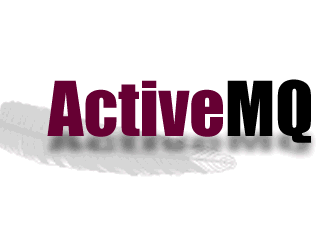
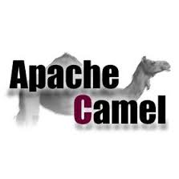
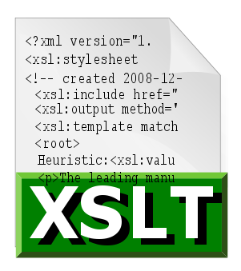
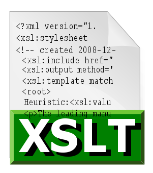

- Java
- C++
- Python
- JavaScript
- Matlab
- J2EE
Gary Lee McGuire
Software Developer
About Me
I am a full-stack software developer and graduate of Cook System International's prestigious FastTrack'd developer program. I currently have one and a half years of enterprise level experience, working mainly with American Express- Global Business Travel to produce quality software with the newest technologies available.
Skills





 

- JQuery
- JSP
- JSF
- AJAX
- HTML5
- CSS3
- XML
- XSD
- XSLT
- JMS
- Spring Framework
- Spring Boot
- Spring Data
- Spring Batch
- Spring Security
- RESTful
- SOAP
- Apache Camel
- Multithreading
- Servlets
- JSON
- JDBC
- Hibernate
- Maven
- Consul
- Redis
- MySQL
- OracleSQL
I specialize in Java and java based technologies. My skill set is extensive and ever increasing, due to my ability to assimilate new languages and technologies on the fly. This ability has allowed me to adapt to any situation and has allowed me to rapidly become a contributing member to any team which I have been assigned.
Professional Projects
Here is a list of projects that I have worked on in my professional career. They are not open source, but I've included details on what they encompassed.
American Express-Global Business Travel Contract: Corporate Profile Migration
Middle-ware application that migrates data from old OracleSQL database to new MySQL database.
- MySQL database structure designed to improve data organization and streamline data retrieval.
- Database tables created using JPA entities and Spring Boot.
- Utilized Apache Camel, dozer, and SOAP to migrate objects from old database and remap the objects for the new databse.
- Spring Batch client written to read CSV files from the Oracle database and write their information into the MySQL tables.
- During information transfer, password encryption was upgraded by decrypting utlizing older algorithm and re-encrypted with improved algorithms
- Utilizing a custom framework, the endpoints of each micro-service were exposed, allowing for the integration of Consul, Redis, and Zuul.
American Express-Global Business Travel Contract: Lynx Middle-ware Application
Middle-ware application that provides web services to translate custom GBT(Global Business Travel) requests regarding travel and booking into appropriate requests for a specified GDS.
- Utilized Apache Camel, XSLT to migrate older middle-ware application functionality into Lynx.
- Spring Boot was integrated into the application to allow it to be deployed on a lightweight embedded web server (tomcat).
- Designed and developed multiple micro-services to handle each request to a GDS.
- Utilizing a custom framework, the endpoints of each micro-service were exposed, allowing for the integration of Consul, Redis, and Zuul.
American Express-Global Business Travel Contract: Legacy Migration and Replacement
Migration of legacy application to current technologies.
- Handled migration of legacy software from IMB WebSphere and Java 6 to Apache Tomcat and Java 8.
- Replaced legacy application with a more efficient application utilizing Spring, Hibernate, Apache Camel.
- Utilizing WSDL, XSD, and SOAP web-service, added functionality to the application that allows requests and responses to marshal into Java objects for the application to process.
- Deployed the new application onto Apache Tomcat.
Personal Github Projects
These are personal projects that I have worked on, or are currently working on. Each title provides a link to the corresponding github repository.
Multithreaded cloud server with a client, GUI included, to connect. As of the moment, it only supports downloading files from the server to the client, as it was written mainly to test my knowledge of multithreading, sockets, AWT/Swing, DOM, as well as input and output steams. As of now, it has been tested and works with transferring text, png, xml, and even mp4 files.
Simple twitter clone made using Spring MVC, Hibernate, Maven, xHTML, JSF, and Wildfly server.
This webpage's repository. It was written in HTML, CSS, and JavaScript.
Flight reservation system, utilizing three different maven projects to correspond with each other via JMS and RESTful web services. Technologies used were Maven, Spring MVC, MySQL, JSF, XML, XHTML, ActiveMQ, and Spring Security.
More extensive, group collab, social-media clone; based off of all technologies used with the Twitter-Clone with added Bcrypt password encryption.
Sample project for Jedis, that will connect to both MySql DB and Redis. The goal is to have it copy and cache complete tables from MySQL into Redis, allowing for queries to be perfomed straight to Redis instead of MySQL. Following successful cloning of MySQL into Redis, the next stage will be to have every query update MySQL, when performed on redis.
This is an ongoing Angular Project geared towards personal AngularJS practice and learning. The plan is to start out small, with a single page and then expand it to a full rich featured application.